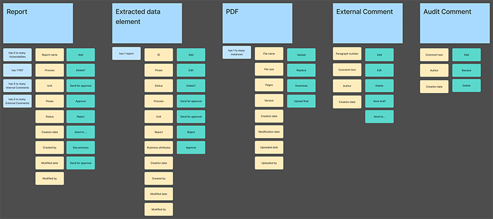
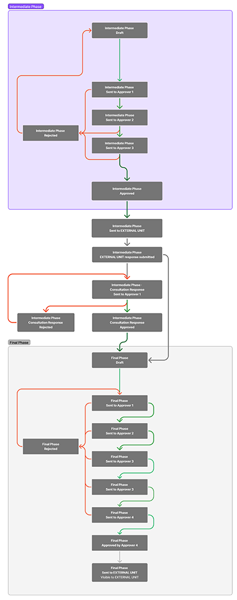
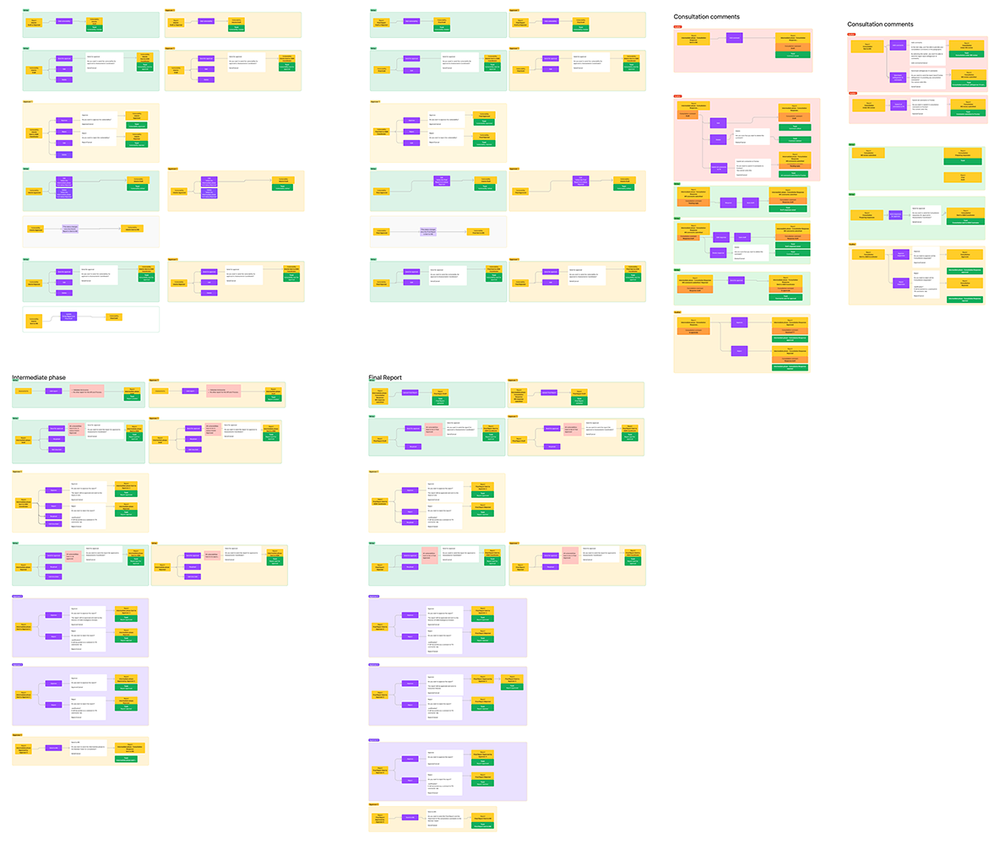

Client
An intergovernmental organisation in the security sectorProduct
Web application (internal tool)My role
Lead Product Designer (end-to-end)Year
2025Goals
- Consolidate report creation and an email-based approval process into a module acting as a single source of truth for documents, extracted data, deadlines, comments, and approvals.
- Enable users to edit reports while extracting structured data ready for integration with an external system.
- Reduce data mismatches and human error in business process.
Users
Organisation employees and external experts.
Challenges
- Support multiple approval loops for users with different clearance levels, while keeping the UI consistent.
- Prevent a critical compliance failure in the approval process.
- Allow users to review and act on large volumes of information simultaneously: A4 report pages, complex forms, and extensive comments (incl. tables and charts).
- Maintain versioning and tracks change across document content, extracted data, and approval actions.
- Protect users from sharing restricted data with unauthorized recipients.
Constraints
- Restricted domain: sensitive information limited what the client allowed our team to access.
- Research: limited access to observe workflows and interview specific user groups.
- Complex business logic and edge cases created by multi-step, multi-group sequential approvals.
Results (client estimate)
- ~50% reduction in approval cycle time.
- ~70% faster data integration into the external analytics system.
- ~30% efficiency gain in document access.
1. Discovery of the business context
Through discussions with the Head of Department, I mapped the workflow of the current email-based process.
The operational reality:
Every unit within the organization is required to produce compliance-critical reports that feed into a broader security analysis. The process was a fragmented "black box":
- Writers drafted narrative documents and manually extracted key intelligence into spreadsheets.
- Approvers (spanning 4 sequential groups with different clearance levels) tracked approval status via email.
- Consultants provided expert feedback via email attachments.
- Data Analysts received final reports but had to manually import data into external systems.
- Internal discussions were forced into back-channels to avoid accidentally exposing sensitive data.
The need for transformation:
-
In a security setting, lack of a unified system created critical risks:
- Data integrity risk: Mistakes in manual work led to flawed intelligence.
- Compliance failure: Without hard constraints, reports could be approved even if data were incomplete.
- Security vulnerability: Confusing boundaries between internal and external data created a constant risk of unintended data exposure.
- Audit blindness: "who approved what, and when?" required long analysis of email timestamps.
2. User research
Research approach
Due to security restrictions preventing access to some user groups, I conducted interviews with 10 internal proxy users and facilitated co-design workshops mapping the goals, needs and pain points.
Key findings
- Data should not be validated in isolation:
To make informed decisions, users need to cross-reference a given document with relevant extracted data attributes and comments.
Implication: The UI must present information in context to reduce cognitive overload and eliminate context switching. - Approval process requires sequencing: Approvers frequently overlooked unreviewed attachments and incomplete data fields, mistakenly granting final approval to non-compliant reports.
Implication: The system requires a structured mix of soft suggestions (reminders, notifications) and, when critical, hard constraints (blocking actions while reminding users about what is missing). - Need for contextual feedback: Feedback isn't just text. Users need to insert tables, charts, and images to comment on specific data. In email, context was lost or disconnected from the source.
Implication: The commenting system must support rich media and complex tables, anchored specifically to document sections or data fields. - Cognitive overload and work duplication: Users are overwhelmed by the volume of data, while struggling to track deadlines and report status. They are tired of manual data re-entry that causes errors and rework.
Implication: The system must be the "Single Source of Truth" ensuring clear status visibility and a supportive notification system.

3. Problem definition
I began by deconstructing the existing workflow — mapping the core objects, user tasks, and critical pain points. This systemic analysis helped me define the key issues, frame the design challenges, and became the foundation for the status maps and interaction flows.
I formulated these challenges in a "How Might We" (HMW) format.
How might we help users:
- enable simultaneous analysis of reports, data, and comments without cognitive overload?
- enforce strict approval sequences (data first, then report) without frustrating users?
- support rich, anchored feedback while preventing accidental data leaks to external units?
- eliminate version chaos with a unified, immutable audit trail?
4. Process of solution development
State machine and approval flow
The core dilemma was granular vs. batch approval. Should users approve individual data objects or the entire report at once?
- The business initially pushed for a granular model that mirrored their current process. To validate the approach, I developed detailed state machine diagrams and iterated through multiple versions of user flows. This exposed a critical flaw in the granular approach: it would flood users with a "million small tasks" and constant context switching.
- I advocated for consolidating these micro-tasks into meaningful batch milestones. Instead of forcing users to click "Approve" multiple times, I designed a flow that groups related objects into a single review sequence.
- Transitioning to this model required managing stakeholder expectations. I used the diagrams as evidence to demonstrate that the client's original vision would result in operational bottlenecks.


Layout
Research revealed that users needed to read the report, tag data attributes, and discuss issues simultaneously.
- I designed a unified 3-panel interface (Data Input | Document Viewer | Communication) that keeps all necessary context on a single screen. This way, users do not rely on short-term memory to carry information from one page to another.
- To avoid overwhelming users with raw logs, I prioritized their mental model: recent activity first, with expandable details.


5. Collaboration and technical handoff
The 3-pane responsive layout was technically demanding, requiring precise alignment with engineering to avoid rework.
- Annotated prototypes: I delivered comprehensive Figma specs detailing all expand/collapse states, transition animations, breakpoints, and edge cases (e.g., long comments).
- Logic mapping: I defined state machines for all panel combinations and transition triggers to clarify complex behaviours.
- Developer cooperation: I explained the necessity of the layout and conducted side-by-side reviews. Developers noted that this clarity was crucial for implementing the complex logic without errors.
6. Outcomes and impact
-
(Note: Metrics below are based on client feedback and estimates, not system analytics.)
- ~50% approval time reduction: Moving from chaotic email threads to a consolidated workflow slashed approval times (client estimate: from ~40 min to ~20 min).
- 70% faster data integration: Structured data extraction enabled immediate ingestion into the external analytics system, replacing manual re-entry.
- ~30% of time saved, previously wasted searching for the correct version.
- Elimination of approval errors: Hard constraints successfully prevented the critical compliance failure of approving reports with incomplete sub-items (down from an estimated ~40% error rate).
- Risk mitigation: Created a complete, immutable audit trail for every change and approval, mitigating security risks.
7. Next steps
- Developing a comprehensive tasklist for users managing multiple reports, allowing them to track deadlines and pending actions in one view.
- Transitioning from the PDF-based workflow to an in-app document editor. This would allow users to write reports directly in the system, enabling tighter integration between text and data.
- Introducing the ability to bulk-approve low-risk data items at once to reduce repetitive clicks and friction for power users.
- Implementing report templates to accelerate the creation phase and ensure consistent structure.
Key learnings
- Critical process analysis: I learned that effective design requires challenging the client's mental model, not just digitizing their existing workflow. By questioning why a process works a certain way, I was able to consolidate and simplify the logic rather than replicating offline chaos.
- Embracing complexity: In complex domains, "minimalist" design isn't always superior. I learned that visible complexity can actually support critical tasks rather than distract from them. Having full context immediately available is the key to speed and accuracy.
- Trust must be designed: Users in critical domains—where decisions have irreversible consequences—are rightly skeptical of new tools. Resistance is a rational response to risk. I learned that trust must be designed: by preventing errors, ensuring transparency, and granting users’ autonomy. User adoption depends on proving that the system respects the gravity of the work.